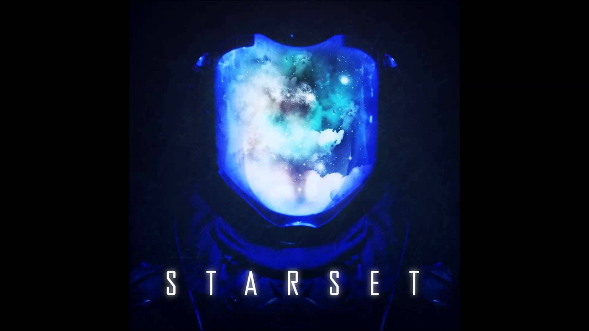

Music Anime
Electro Music
Cumbia Peruana
MAS MUSICA ABAJO ♫♪♪♫
Feel Invincible
"Es el primer sencillo del álbum de 2016, Unleashed, de la banda estadounidense de rock cristiano Skillet, y es la primera canción del álbum. Fue lanzado el 20 de mayo de 2016. La canción se convirtió en el primer sencillo No. 1 de Hot Christian Songs de Skillet.
Centuries

Es una canción de la banda estadounidense de rock Fall Out Boy , lanzado 8 de septiembre de 2014 como el primer sencillo de su próximo sexto álbum de estudio, American Beauty/American Psycho. Fue coescrito por Fall Out Boy, con dos productores con partituras de la canción Tom's Diner.
Numb

Es un sencillo del álbum de Linkin Park, Meteora, lanzado en septiembre de 2003.La canción está hecha para un adolescente, como el vídeo musical muestra varias escenas centradas en torno a una adolescente y el rechazo que constantemente recibe por parte de los demás.
My Demons
Es una canción rock de la banda americana Starset. La canción fue grabada originalmente por la banda para su primer álbum de estudio, Transmissions, donde aparece como la séptima pista del álbum y sirve como el primer sencillo, fue publicado el 1 de agosto de 2013 como una descarga digital.
On my Own

Es una canción de la banda de rock cristiano Ashes Remain, banda proveniente de Maryland, Estados Unidos. Está compuesta por el vocalista Josh Smith, los guitarristas Rob Tahan y Ryan Nalepa, el bajista Jon Hively y el baterista Ben Kirk.
Stressed Out
Es una canción compuesta y grabada por el dúo estadounidense, Twenty One Pilots para su cuarto álbum de estudio, B̶l̶u̶r̶r̶y̶f̶a̶c̶e̶.
Natural
Es una canción de la banda estadounidense Imagine Dragons, cuyos miembros co-escribieron junto con Justin Tranter y sus productores Mattman & Robin.
Infinity
Es una canción del cantante y compositor estadounidenseJaymes Young, lanzada como sencillo el 23 de junio de 2017, de su álbum debutFeel Something. En 2021, la canción se volvió viral enTikTok, donde ha aparecido en 5.2 millones de videos hasta ahora.